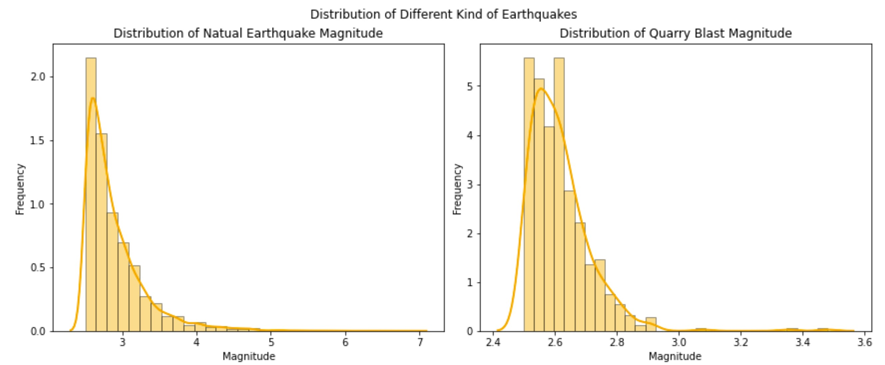
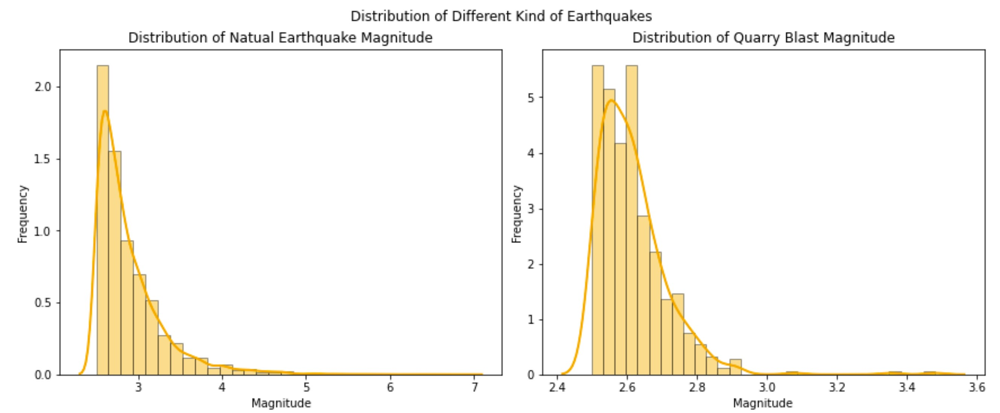

Process
Transforming Raw Data into Actionable Insights - The Data Gathering and Cleansing Process
During the early stages of our research, we spent a couple of days browsing the internet to find suitable databases that would allow us to analyze the relationship between housing prices and earthquakes in California. We knew that finding a useful dataset would be crucial for our future research and analysis. After several attempts, we found a large dataset containing information on earthquake occurrences, housing prices, and other relevant data.
However, as our research was focused solely on exploring the relationship between housing prices and earthquakes in California, we needed to filter the dataset to remove any unnecessary data, such as magError and deepError. Specifically, we filtered the earthquake data to include only those that occurred in California and then narrowed down the area around each housing location. This helped us to calculate the total number of earthquakes that had occurred in that area and remove any redundancy in the data.
As we analyzed the data, we discovered an interesting pattern: there were two types of earthquakes - natural earthquakes and earthquakes caused by quarry blasts. We calculated the total number of each type of earthquake in each area, which provided us with valuable insights into the impact of different types of earthquakes on the housing market.
In retrospect, I believe that we could have done a better job in our data cleaning process. For example, we could have used more advanced data cleaning techniques to remove any outliers and ensure the accuracy and reliability of our data. However, given the limited time and resources we had, we made the best decisions we could with the data available.
Overall, our data gathering and cleaning process helped us to obtain valuable insights into the relationship between housing prices and earthquakes in California.
Uncovering Insights from Data: An Analysis of Housing Prices and Earthquakes in California
During our data analysis, we first decided to demonstrate the distribution of earthquake magnitude using a histogram. Since we were only looking at one variable, histograms were an effective way to visualize the distribution of the data. While creating the histogram, we noticed that there were outliers in the count of natural earthquakes and the count of earthquakes caused by quarry blasts in different regions. These outliers could potentially skew our results and make it difficult to draw accurate conclusions. To prevent these outliers from affecting our analysis, we decided to remove them before demonstrating the distribution of the two types of earthquake counts.
 

After demonstrating the distribution of earthquake counts, we applied an Ordinary Least Squares (OLS) model to predict the relationship between housing prices and earthquakes. The OLS model allowed us to determine if there was any significant correlation between the two variables. Our analysis revealed that there was no significant correlation between earthquake frequencies and magnitudes and housing prices in California.
In retrospect, one thing we could have done to improve the analysis would have been to use a different model or approach to analyze the relationship between housing prices and earthquakes. While the OLS model we used is a common and effective method, there may have been other models or techniques that could have yielded different results or provided additional insights.
Through this analysis process, we learned the importance of attention to detail. The outliers we identified in the earthquake count distribution had a significant impact on our results. We also realized the significance of choosing the right visualization tool for the data we are analyzing. Additionally, we discovered that the OLS model is a useful tool to identify significant correlations between variables.
If we had more time, we would have looked at other variables that could affect housing prices, such as proximity to transportation, schools, or crime rates. Furthermore, we would have analyzed the data using other models, such as a multiple regression model, to see if any other factors had a significant impact on housing prices. However, we chose to focus on the relationship between earthquakes and housing prices at that time because it was relevant to our research question.
Overall, I learned that analyzing data is not just about crunching numbers and running models; it also involves effectively communicating the findings to others. This is why I learned the importance of demonstrating clear and concise ways to present the data, both verbally and in writing. It is crucial to convey the information in a way that the audience can understand and use it. During the analysis process, I also realized that paying attention to details is paramount. The choice of diagrams and models, the presence of outliers, and other nuances can significantly impact the results. Thus, being attentive to detail is essential to ensure that the analysis is accurate and reliable. Collaboration is another vital aspect of data analysis. Each team member has unique talents and perspectives that contribute to the project's success. Collaborating with others allows us to share ideas, discuss issues, and find solutions collectively. It also helps in dividing the workload and completing the task efficiently. The analysis process was also a continuous decision-making process that required a lot of trial and error. Every step involved making crucial decisions that had a direct impact on the outcome. Therefore, being able to make informed decisions is critical to ensure that the project is successful.
Ethical Considerations in Data Collection and Analysis - Protecting Privacy and Ensuring Fairness
During the process of discussing ethics and privacy, I was given the responsibility to write this section. As I was writing, I came to the realization that making ethical decisions is crucial in any research. It's not just about obtaining data or information, but it's also about treating people fairly and respectfully.
One of the key takeaways I learned is that ethical considerations should be taken seriously and given proper attention at every stage of the research process. It's not just an afterthought that needs to be addressed after the research is completed; rather, it should be a continuous process that's integrated into the research design and implemented throughout the research process.
Another crucial aspect that I learned is the importance of respecting the privacy of individuals whose data is used in the research. As researchers, it's our responsibility to ensure that the data collected is used only for its intended purpose, and that the privacy and confidentiality of the individuals involved are safeguarded at all times. We must ensure that we have the necessary permissions and consents from the individuals involved and that their data is securely stored and protected.